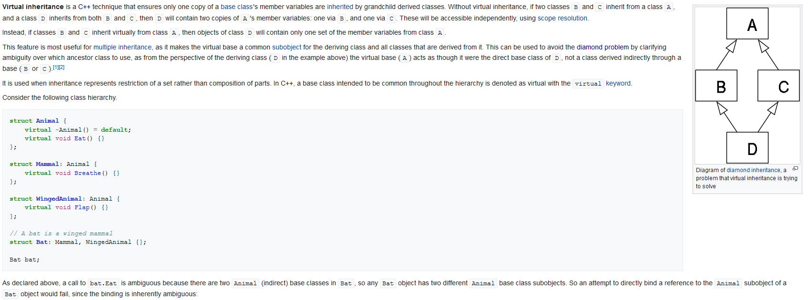
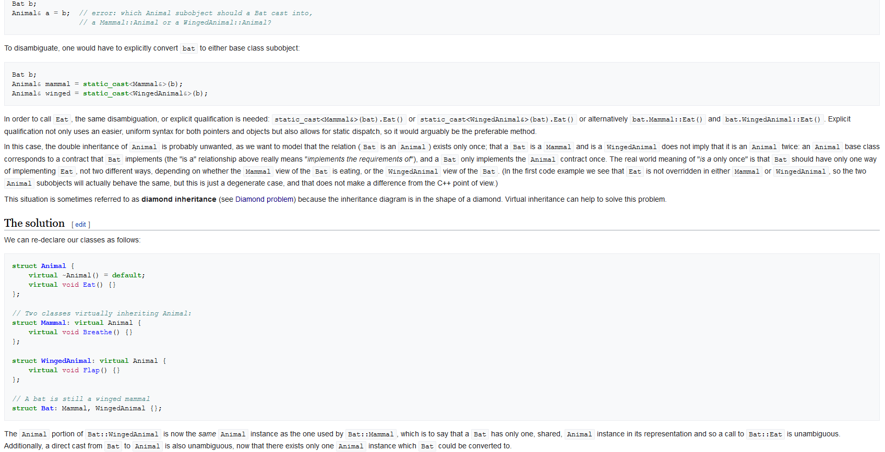
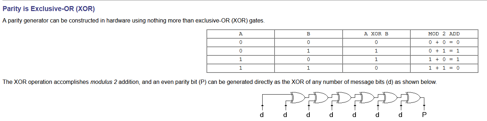

This week we will look at two unrelated topics. Multiple inheritance is a feature of C++ that allows a class to inherit from more than one base class. Bitwise expressions allow operations in C++ to be performed at the bit level.
| Lecture Recording | Monday, November 29 (mp4) |
| Multiple Inheritance | C++ Multiple Inheritance Explained |
| Multiple Inheritance in C++ with Ambiguity & Resolution | |
| Virtual Base Class In C++ || Multipath Inheritance In C++ | |
| Bitwise Expressions | C++ Bitwise AND and OR |
Multiple Inheritance
When a class inherits from two or more base classes, ambiguities can result. One way of resolving ambiguities is in the class itself, where
it specifies which base class should perform which function. Another way is by making a common base class virtual. See the following explanation:


Code that demonstrates the resolution of ambiguities can be seen at:
Name.h,
Name.cpp,
NCube.h,
NCube.cpp,
NLitCube.h,
NLitCube.cpp,
NLitObj.h,
NLitObj.cpp and
VirtualInheritance.cpp.
The following code demonstrates the inheritance structure for an amphibious vehicle, an automobile, a boat, and a vehicle. Both an automobile and boat are vehicles, and
inherit from the class Vehicle. An amphibious vehicle is both a boat and an automobile, and inherit from the classes Boat and Automobile. The code can be seen at:
Vehicle.h,
Automobile.h,
Automobile.cpp,
Boat.h,
Boat.cpp,
AmphibiousVehicle.h,
AmphibiousVehicle.cpp and
AmphibiousVehicleMain.cpp.
Bitwise Expressions
Flags are often used to qualify a certain operations. Files, for instance, have flags to indicate whether the file is read-only, write-only, read-write, to
indicate permissions etc... It is a waste of space to store each piece of information inside of a standard data type such as int. Rather, since these
flags represent binary states, they could be stored inside specific bits of one flag. For instance, the following document shows how to set and unset
flags for a file: SetUnsetBit.docx.
The following code follows the document in the setting and unsetting of bits for a files operation class:
FileOperations.h and
SetUnsetBit.cpp.
Error detection can be performed by a parity bit, which basically is set to 0 if there are an even number of 1 bits in the data, and 1 if there are an odd
number of 1 bits in the data. The parity bit is attached on to the data as the data is being transmitted. The receiving side can compare the parity bit
to the number of 1 bits in the received data. If there are an even number of bits in the data and the parity is 0, or there are an odd number of bit
and the parity is 1, an error has occurred, and the data has to be retransmitted. The parity bit can be determined by taking an exclusive-OR of all the bits
as seen in the image:

The code can be seen at ErrorDetection.cpp.